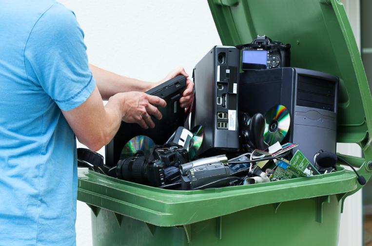

La chatarra tecnológica, también conocida como residuos electrónicos o e-waste, se refiere a
los
dispositivos electrónicos desechados. Estos incluyen teléfonos móviles, computadoras,
televisores,
electrodomésticos, y otros aparatos electrónicos que ya no se usan o están rotos.

Algunos aspectos clave:
1. Crecimiento Exponencial
La cantidad de chatarra tecnológica está
creciendo rápidamente debido a la rápida obsolescencia.
2. Composición
Los residuos electrónicos contienen materiales
valiosos
como oro, plata, cobre, platino y paladio.
3. Impacto Ambiental
Si no se gestionan adecuadamente, los residuos
electrónicos pueden liberar toxinas en el suelo, el agua y el aire.
4. Reciclaje y Reutilización
El reciclaje adecuado permite recuperar
materiales valiosos y reducir la necesidad de extraer nuevos recursos.
5. Regulaciones
Muchos países tienen leyes y regulaciones
específicas
para la gestión de residuos electrónicos. Directivas como la Directiva de Residuos de
Aparatos Eléctricos y Electrónicos (RAEE) en la Unión Europea establecen normas para la
recolección, reciclaje y reutilización de e-waste.
Empresas que emiten gran cantidad de Chatarra Electronica
Apple üçè
Genera toneladas de desechos electrónicos debido a la obsolescencia programada y
actualizaciones constantes de sus dispositivos.
Ha implementado programas de reciclaje, pero aún enfrenta críticas por la falta de
reparabilidad de sus productos.
Samsung üì±
Uno de los mayores productores de teléfonos, televisores y electrodomésticos.
Invierte en reciclaje y uso de materiales reciclados, pero el volumen de desechos sigue
siendo alto.
Dell üíª
Gran generador de chatarra tecnológica debido a la producción
masiva de computadoras y
servidores.
Su programa de reciclaje de PC ha sido uno de los más antiguos y avanzados.
Saludos cordiales üñ®Ô∏è
Las impresoras y cartuchos generan grandes cantidades de residuos electrónicos y plásticos.
Ha promovido programas de reciclaje de cartuchos y equipos.
Lenovo üñ•Ô∏è
Líder en venta de laptops y PCs, lo que contribuye significativamente a la chatarra
electrónica. Implemente estrategias para extender la vida útil de sus productos y fomentar
el reciclaje.
Microsoft üè¢
Sus productos como Xbox, Surface y accesorios electrónicos generan grandes cantidades de
desechos. Ha avanzado en el uso de materiales reciclables en sus dispositivos.
Sony üéÆ
PlayStation, televisores y otros productos electrónicos contribuyen a la acumulación de
chatarra tecnológica.
Trabaja en la reducción de plásticos y materiales contaminantes.